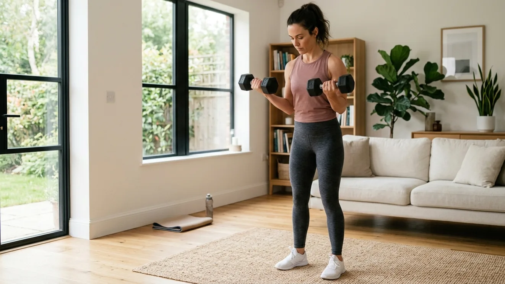
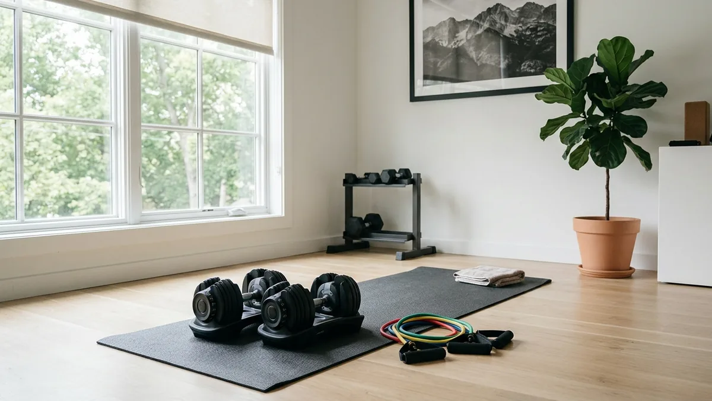

Weekly Home Workout Plan for Busy Adults (Simple & Sustainable)
The best weekly home workout plan for busy professionals is 3 days per week, 25–35 minutes per session, alternating upper body, lower body, and full body. Use bodyweight and resistance bands to start, add dumbbells as you progress. Consistency over 8 weeks produces visible results.

s an Amazon Associate I earn from qualifying purchases.
You've tried the 6-day workout programs. You've downloaded the apps. You've watched the YouTube routines. And somewhere around week two, life gets in the way — a late meeting, a sick kid, a deadline — and the whole thing falls apart.
A realistic weekly home workout plan for busy professionals doesn't look like a fitness influencer's schedule. It looks like something you can actually maintain when your week goes sideways. Three days. Clear structure. Minimal equipment. Real results.
This is that plan.
Quick Answer
The best weekly home workout plan for busy professionals is 3 days per week, 25–35 minutes per session, alternating upper body, lower body, and full body. Use bodyweight and resistance bands to start, add dumbbells as you progress. Consistency over 8 weeks produces visible results.
Why Most Workout Plans Fail for Busy Professionals
The problem isn't discipline. It's design.
Most workout plans are built for people with unlimited time, no family obligations, and a gym membership. They assume you can train 5–6 days a week, spend 60+ minutes per session, and recover perfectly between workouts.
For busy professionals over 30, that's not reality. What works is a plan built around your actual constraints — not an ideal version of your life.
Three days a week is the sweet spot: enough stimulus to build real fitness, enough recovery to avoid burnout, and enough flexibility to survive a chaotic week without falling off completely.
The Weekly Home Workout Plan for Busy Professionals
What You Need
You don't need a full gym. Three pieces of equipment cover everything:
- A mat for floor work and joint protection — the Large Workout Mat gives you enough space for any movement
- Resistance bands for pulling and accessory work — the Assisted Pull-up Resistance Bands cover rows, pull-up assistance, and mobility
- Adjustable dumbbells for progressive overload — the Adjustable Dumbbells (20–90lbs) replace an entire dumbbell rack
Day 1 — Upper Body (Tuesday)
Focus: push and pull movements for chest, back, shoulders, and arms.
- Push-ups — 3 sets of 10–15 reps
- Dumbbell Bent-Over Rows — 3 sets of 10 each side
- Dumbbell Shoulder Press — 3 sets of 10
- Band Pull-Aparts — 3 sets of 15
- Tricep Dips (chair) — 3 sets of 12
Rest 45 seconds between sets. Total time: 25–30 minutes.
Day 2 — Lower Body (Thursday)
Focus: glutes, quads, hamstrings, and calves.
- Goblet Squats — 3 sets of 12
- Romanian Deadlifts — 3 sets of 10
- Reverse Lunges — 3 sets of 10 each leg
- Glute Bridges — 3 sets of 15
- Calf Raises — 3 sets of 20
Rest 45 seconds between sets. Total time: 25–30 minutes.
Day 3 — Full Body + Core (Saturday)
Focus: compound movements that work everything, plus core stability.
- Pull-ups or Band-Assisted Pull-ups — 3 sets of 6–10
- Dumbbell Squat to Press — 3 sets of 10
- Single-Leg Romanian Deadlifts — 3 sets of 8 each leg
- Plank — 3 x 30–45 seconds
- Dead Bug — 3 sets of 8 each side
The Multi-Grip Pull Up Bar installs in any doorframe — no drilling, no damage. The multi-grip positions let you work your back from different angles each week.
The 4-Week Progression
Every week, add one small challenge:
- Week 1–2: Focus on form, learn the movements
- Week 3: Add 1–2 reps to each set
- Week 4: Increase weight by 5lbs or add a 4th set
- Week 5+: Repeat the progression with heavier loads
Track Your Progress the Smart Way
After 30, how you recover matters as much as how you train. The Garmin Vívoactive 5 gives you a daily Body Battery score — a readiness metric based on sleep quality, HRV, and stress levels. On days your Body Battery is low, scale back the workout. On days it's high, push harder. This single adjustment prevents the overtraining that derails most programs.

Recommended Products
| Product | Why It Helps | Link |
|---|---|---|
| Large Workout Mat | Protects joints, defines workout space, works on any floor | View on Amazon |
| Assisted Pull-up Resistance Bands | Pull-up assistance, rows, mobility — most versatile tool | View on Amazon |
| Adjustable Dumbbells 20–90lbs | Replaces entire dumbbell rack — progressive overload made easy | View on Amazon |
| Multi-Grip Pull Up Bar | Doorframe install, multiple grip positions, no drilling | View on Amazon |
| Garmin Vívoactive 5 | Daily readiness score — train smarter, recover faster | View on Amazon |
Disclosure: We may earn a small commission if you purchase through our links, at no extra cost to you. We only recommend products we'd genuinely use ourselves.
Common Mistakes With Weekly Workout Plans
- Training too many days— more is not better after 30. Three quality sessions beat six mediocre ones every time
- No rest days between sessions— always have at least one rest day between workouts. Muscle grows during recovery, not during the workout
- Same workout every week— your body adapts in 3–4 weeks. Change reps, sets, weight, or exercise variations regularly
- Skipping warm-up— 5 minutes of mobility and light movement prevents injury and improves performance
- Abandoning the plan after one missed session— missing one workout is rest. Missing two is a pattern. Get back on track the next scheduled day, not "from Monday"
FAQ
Q: What does a good weekly workout plan at home look like?
Three sessions of 25–35 minutes, split into push, lower body, and pull plus core, with walking on the days between. That's enough stimulus to build real strength and enough recovery that week two doesn't collapse. Anything more ambitious is usually what breaks the plan by week three.
Q: How many days a week should I work out at home?
Three is the number most busy adults can actually hold. Four works if your week is predictable; two still produces results if it's genuinely every week. Pick the number you can hit on your worst week, not your best one — a plan you follow 90% of the time beats a better plan you follow 40% of the time.
Q: What's a realistic home workout schedule if my evenings are unpredictable?
Don't schedule by clock time. Pick three sessions per week and attach each one to an event rather than an hour — after the kids are down, after you close the laptop, before your first meeting. The week stays flexible; only the count is fixed.
Q: Can I get effective home workouts into a busy schedule without equipment?
Yes, for a long while. Bodyweight progressions — push-up variations, split squats, glute bridges, rows under a table — take most people months before they stall. Add resistance bands first and adjustable dumbbells only when bodyweight genuinely stops being hard.
Q: How long before a weekly home workout plan shows results?
Strength and energy in three to four weeks; visible change takes two to three months and depends more on sleep and food than on the workouts. If nothing has shifted after a month of consistent sessions, the problem is usually recovery, not the plan.
Q: Is 3 days a week enough to see real results?
Yes — especially for adults over 30 who are balancing work and life. Three focused sessions per week with progressive overload produces significant strength and body composition changes within 8–12 weeks.
Q: What if I can only do 2 days some weeks?
Two days is far better than zero. Do the upper body and lower body sessions and skip the full body. You'll maintain your gains and stay in the habit.
Q: Can I do cardio on rest days?
Light cardio — walking, cycling, or stretching — is fine on rest days. Avoid high-intensity cardio that competes with your recovery from strength training.
Q: How long until I see results?
Most people feel stronger within 2–3 weeks and see visible changes within 6–8 weeks of consistent training. Strength gains come faster than visual changes.
Q: Do I need to eat differently on workout days?
Slightly more protein helps — aim for 0.7–1g per pound of bodyweight daily. On workout days, make sure you eat enough to fuel the session and support recovery. Don't train fasted if it makes you feel weak or dizzy.
Final Tip
The best weekly home workout plan for busy professionals is the one you're still following in month three — not the one that looked impressive on paper but collapsed by week two.
Pick Tuesday, Thursday, and Saturday. Set a 30-minute calendar block. Show up even when you don't feel like it — especially then. That's the whole plan.
That's one small daily move — exactly the kind that adds up to a big lifetime gain.
Want more practical health habits for busy adults? Browse our guides at EverydayFitHabits.com — built for people who don't have time to waste.